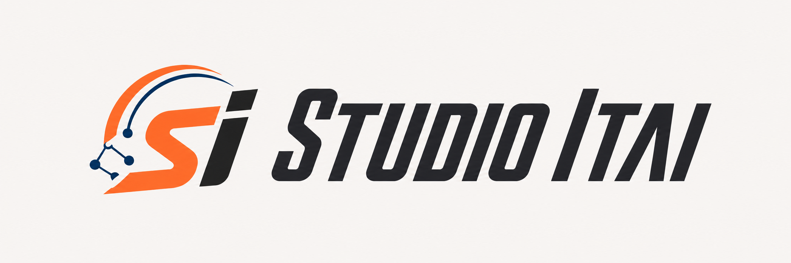
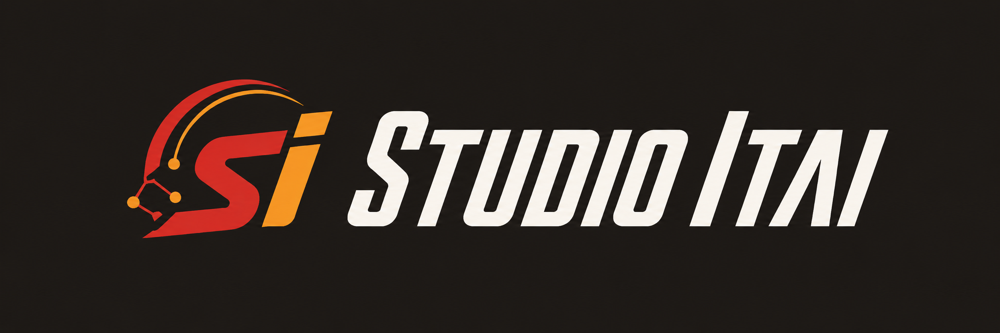

Localized onboarding
English and Hebrew routes guide clients through goals, availability, constraints, and training context with locale-aware copy and RTL support.


Studio Itai AI Coach AssistantNext.js coaching platform · AI plans
Studio Itai turns onboarding, workout planning, training logs, AI guidance, and trainer oversight into one bilingual product for clients and their coach.
Project overview
The platform replaces manual intro calls, spreadsheet-style plan tracking, and repeated technique explanations with a structured client journey. Clients onboard, receive validated AI-generated workout plans, log sessions, ask the AI trainer questions, and export plans. The trainer monitors progress, reviews chat history, edits plans, manages templates, and contacts clients through WhatsApp.
What it does
English and Hebrew routes guide clients through goals, availability, constraints, and training context with locale-aware copy and RTL support.
Server-side Vercel AI Gateway calls generate structured plans from onboarding data, then validate output before saving to Supabase.
Clients review weekly workouts, open exercise instructions, mark sessions complete, submit notes, and track progress over time.
Authenticated clients ask workout questions in a context-aware chat route while API keys and model calls stay server-side.
The admin can review clients, plans, progress charts, logs, chat history, push readiness, WhatsApp links, and private notes.
Trainer tools cover templates, manual authoring, AI-assisted creation, live-plan edits, duplication, regeneration, and PDF export.
How it is built
Localized pages, theme-aware UI, onboarding, plan views, workout logs, chat, and trainer workflows.
App Router, Server Components, Server Actions, route handlers, root proxy locale handling, and protected layouts.
Auth, Postgres, RLS, SSR clients, push subscriptions, Vercel AI Gateway, and structured model validation.
ESLint, TypeScript, Next build, Vitest, mocked AI integration tests, and Playwright browser coverage.
Stack
Next.js 16.1.7, React 19.2.4, TypeScript 5.9.3, Tailwind CSS 4, shadcn/ui, Base UI, Recharts, and next-themes.
Supabase Auth, Postgres, row-level security, SSR helpers, secret-key admin access, and role-gated trainer routes.
Vercel AI SDK v6, Vercel AI Gateway, Anthropic Claude models, structured plan validation, chat, and PDF generation.
Vitest, Testing Library, Playwright, ESLint 9, Prettier, strict TypeScript, deployment smoke checks, and CI-safe test splits.
Walkthrough
A client registers, chooses the localized experience, and completes a structured onboarding profile.
The server builds a validated AI workout plan and persists the complete weekly structure without saving partial output.
The client follows workouts, logs completion, leaves feedback, receives reminders, and uses the AI trainer chat.
Itai opens the trainer dashboard, checks progress, edits plans, regenerates when needed, exports PDFs, and follows up.
Project documents
Repository